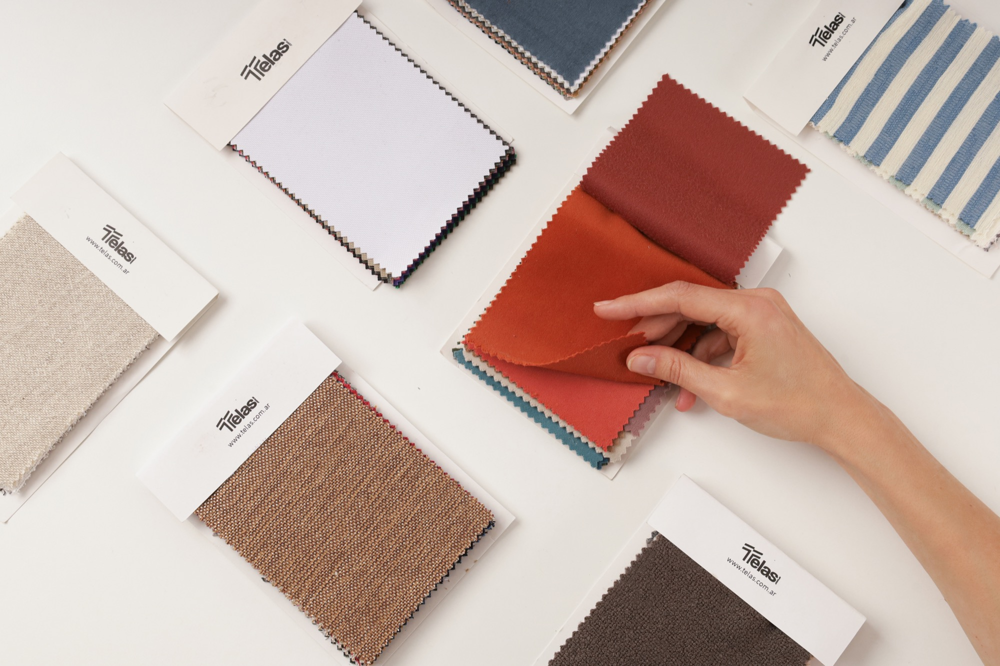
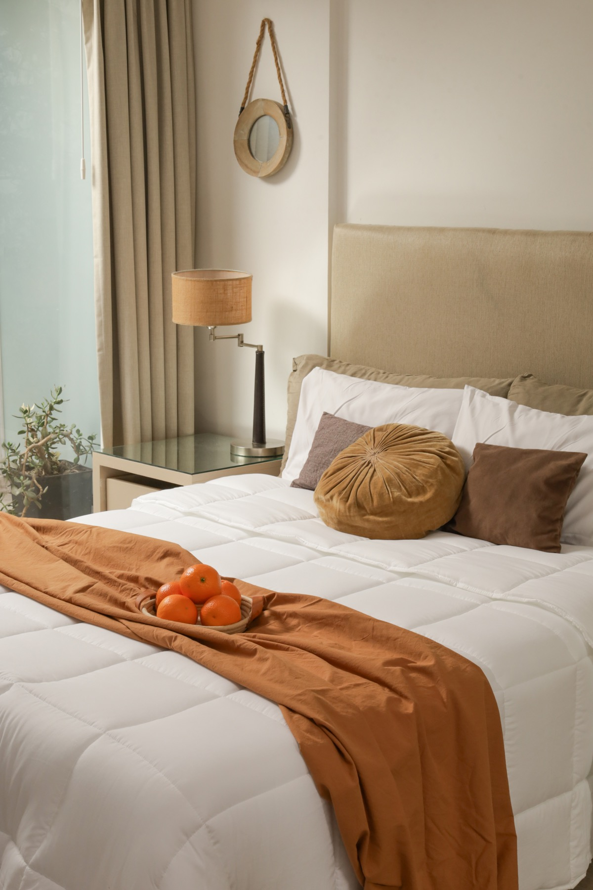
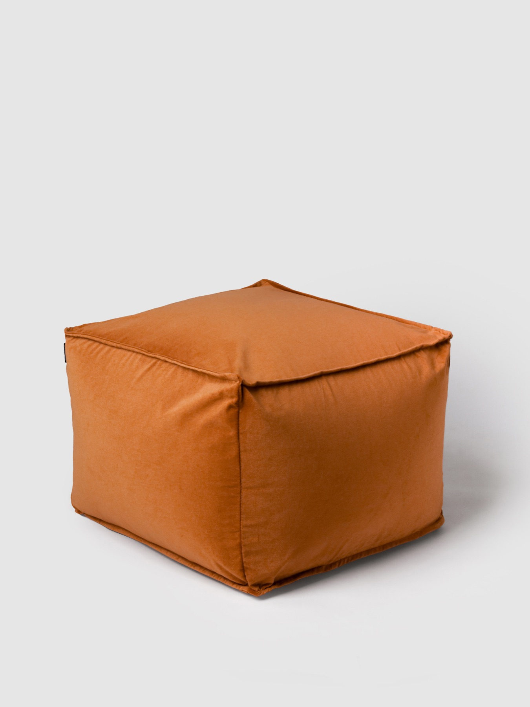

Estudio Joni Levitt
La belleza de
mirar despacio.
Fotografía, luz y pequeños detalles.
Una pausa para ver lo que nos rodea.
Una forma de mirar
01 — 03


Fotografía de textiles, interiores y producto · Joni Levitt.
El estudio
Menos ruido.
Más presencia.
Este es el primer espacio de Estudio Joni Levitt: un lugar para compartir imágenes, explorar la luz y encontrar una mirada propia.
Portfolio y contacto, próximamente.